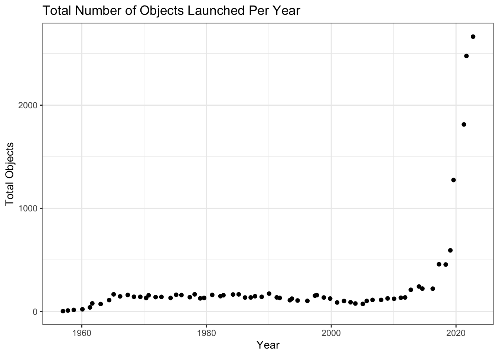

Code
library(dplyr)
Attaching package: 'dplyr'The following objects are masked from 'package:stats':
filter, lagThe following objects are masked from 'package:base':
intersect, setdiff, setequal, unionToday is January 9th, we’re working with the ’Objects Launched into Space” data from April 23, 2024 from Tidy Tuesday.
Attaching package: 'dplyr'The following objects are masked from 'package:stats':
filter, lagThe following objects are masked from 'package:base':
intersect, setdiff, setequal, union###1. import the data
---- Compiling #TidyTuesday Information for 2024-04-23 ----
--- There is 1 file available ---
── Downloading files ───────────────────────────────────────────────────────────
1 of 1: "outer_space_objects.csv"###2. tidy - The data appears already tidy at a glance, but let’s double check.
| Name | outer_space_objects |
| Number of rows | 1175 |
| Number of columns | 4 |
| _______________________ | |
| Column type frequency: | |
| character | 2 |
| numeric | 2 |
| ________________________ | |
| Group variables | None |
Variable type: character
| skim_variable | n_missing | complete_rate | min | max | empty | n_unique | whitespace |
|---|---|---|---|---|---|---|---|
| Entity | 0 | 1.00 | 4 | 21 | 0 | 110 | 0 |
| Code | 142 | 0.88 | 3 | 8 | 0 | 97 | 0 |
Variable type: numeric
| skim_variable | n_missing | complete_rate | mean | sd | p0 | p25 | p50 | p75 | p100 | hist |
|---|---|---|---|---|---|---|---|---|---|---|
| Year | 0 | 1 | 2002.17 | 16.78 | 1957 | 1991 | 2006 | 2017.0 | 2023 | ▁▂▃▅▇ |
| num_objects | 0 | 1 | 29.44 | 162.09 | 1 | 1 | 2 | 6.5 | 2664 | ▇▁▁▁▁ |
###3. Transform
#outer_space_objects |> filter(Year == min(Year))
#It appears that the entity 'world' is an aggregated sum of all the objects released that year. It may be not useful for plotting or aggregating statistics, so we'll create our own table 'space' that doesn't the Entity of 'world' in it.
space <- outer_space_objects |> filter(Entity != 'World')
#I also want to make the distinction bewteen countries and non-countries.
space$Country <- dplyr::if_else(is.na(space$Code), true = 'Non-Country', false = 'Country')####The prompt for today are:
We can get started with these prompts and then see what else we might be interested in. Maybe even some projections?
###4. Visualize
Warning: package 'ggplot2' was built under R version 4.2.3
# A tibble: 109 × 2
Entity total
<chr> <dbl>
1 APSCO 1
2 Algeria 6
3 Angola 2
4 Arabsat 15
5 Argentina 22
6 Armenia 1
7 Australia 47
8 Austria 3
9 Azerbaijan 3
10 Bangladesh 2
# ℹ 99 more rowsThere are {r} nrow(total_df[total_df$total == 1, ] out of {r} length(unique(total_df$Entity)) entities that have only launched one object ever. These are not terribly useful.
`stat_bin()` using `bins = 30`. Pick better value with `binwidth`.#First let’s look at the same plot we already made but change the color?
library(ggplot2)
space_filtered <- space |> group_by(Entity) |> mutate(total = sum(num_objects)) |> filter(total >= 100)
ggplot(space_filtered,
aes(x = Year, y = num_objects, fill = Entity)) +
geom_histogram(position = 'stack', stat = 'identity') +
theme_bw() +
labs(x = 'Year', y = 'Total Objects', title = 'Total Number of Objects Launched Per Year')Warning in geom_histogram(position = "stack", stat = "identity"): Ignoring
unknown parameters: `binwidth`, `bins`, and `pad`Warning in vp$just: partial match of 'just' to 'justification'#Calculate percentage change per year for these 15 entities.
#We can see that there's only a record listed for when something was launched, so for years where there was no launch the number remained the same. We'll have to create a dataframe that has all the years filled in.
space_full <- expand.grid(seq(min(space_filtered$Year), max(space_filtered$Year), by = 1),
unique(space_filtered$Entity))
names(space_full) <- c('Year', 'Entity')
space_full['Number'] <- 0
space_full <- left_join(space_full, space_filtered |> select(Year, Entity, num_objects), by = c("Year", 'Entity'))
space_full$num_objects[is.na(space_full$num_objects)] <- 0
delta_df <- space_full |> group_by(Entity, Year) |> mutate(running_total = cumsum(num_objects)) |> mutate(delta = (running_total-lag(running_total))/running_total)
#percentage change from year to yearWarning: package 'plotly' was built under R version 4.2.3
Attaching package: 'plotly'The following object is masked from 'package:ggplot2':
last_plotThe following object is masked from 'package:stats':
filterThe following object is masked from 'package:graphics':
layoutlibrary(ggplot2)
accumulate_by <- function(dat, var) {
var <- lazyeval::f_eval(var, dat)
lvls <- plotly:::getLevels(var)
dats <- lapply(seq_along(lvls), function(x) {
cbind(dat[var %in% lvls[seq(1, x)], ], frame = lvls[[x]])
})
dplyr::bind_rows(dats)
}
fig_df <- delta_df |> accumulate_by(~Year)
# fig_df <- fig_df |> group_by(frame) |> mutate(id = row_number())
# delta_df$id <- seq.int(nrow(delta_df))
#delta_df
#we basically need to make 'intermediate' plots for this, and each intermediate plot would be indicated as frame X out of frame Y.
#The first plot would only have the first year, then the second plot the data from years 1 and 2, so on.
#There are 67 years, ranging from 1957 to 2023
g1 <- ggplot(fig_df,
aes(x = Year, y = running_total, frame = frame, color = Entity)) +
geom_line(stat = 'identity')
#geom_point() +
# geom_text(data =
# space_filtered |> group_by(Entity) |> mutate(Total = cumsum(num_objects)) |> filter(Year == last(Year)),
# aes(label = Entity),
# show.legend = FALSE) +
# theme_bw() +
# labs(x = 'Year',
# y = 'Total',
# title = 'Total Objects Launched from 1957 - 2023')
fig <- ggplotly(g1)
fig %>% animation_opts(
frame = 300,
transition = ,
redraw = FALSE
)